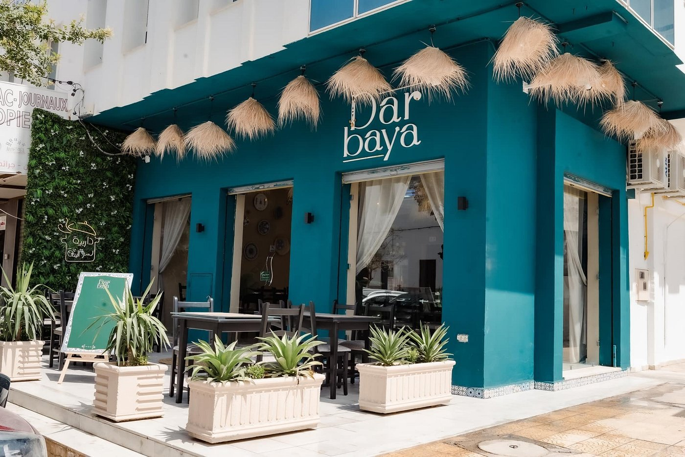
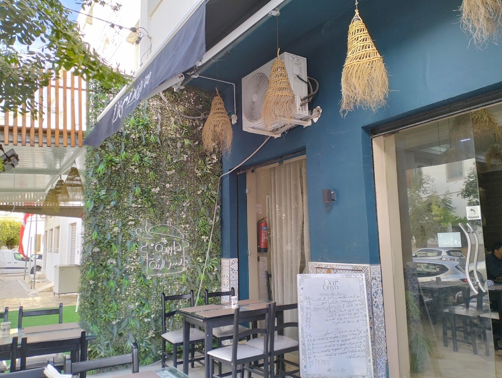
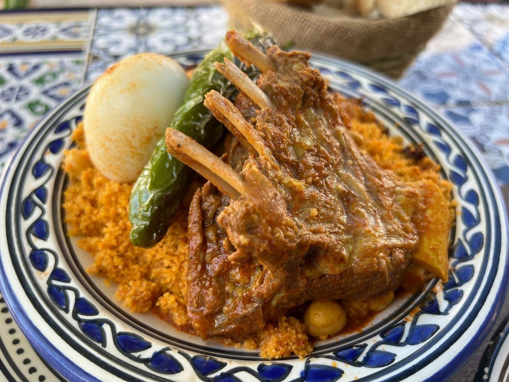
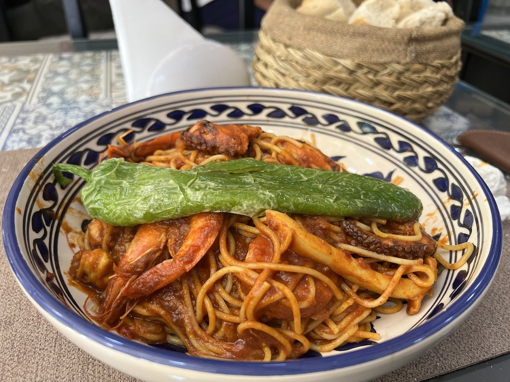
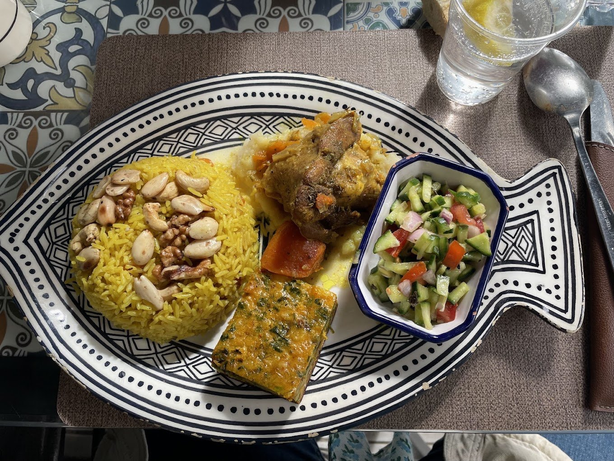
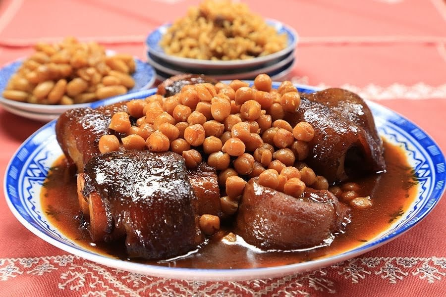
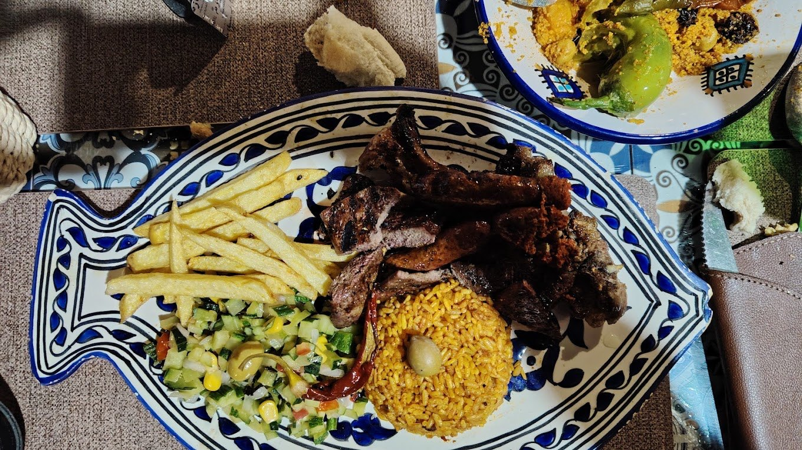
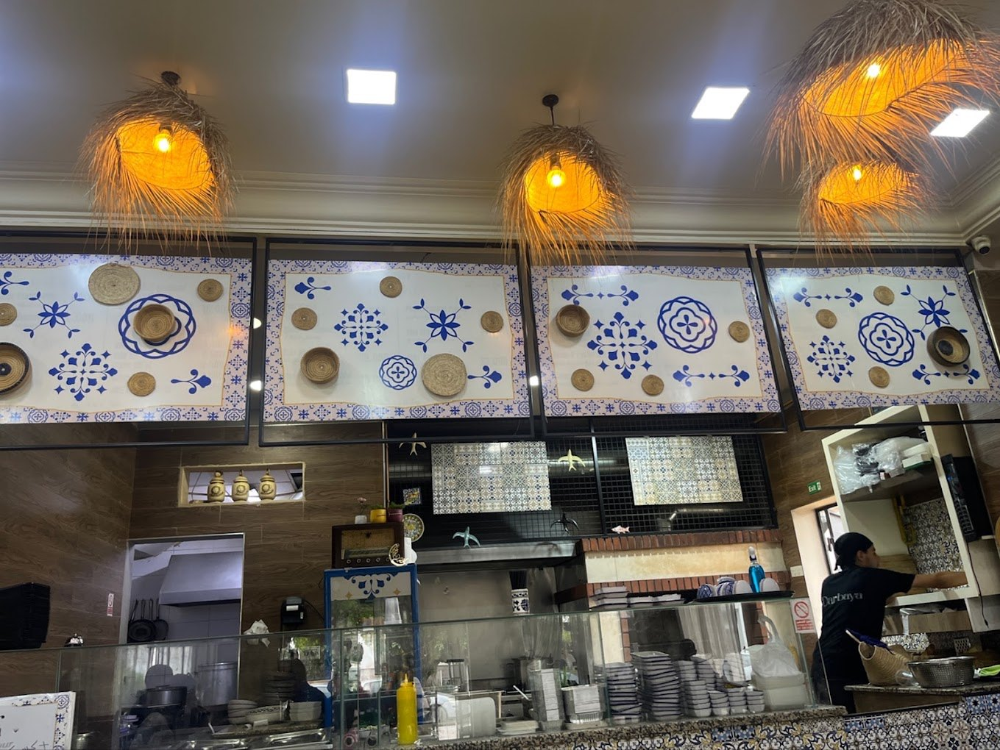
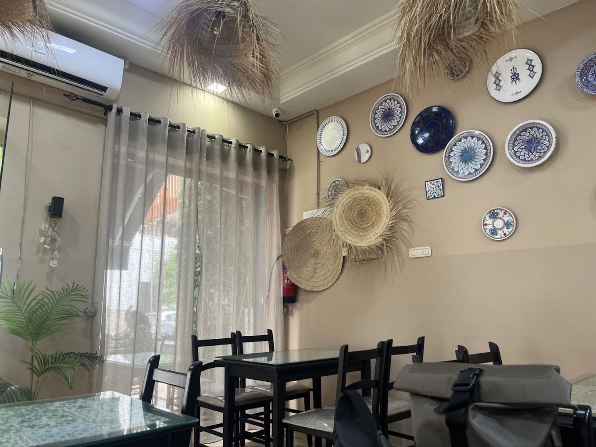
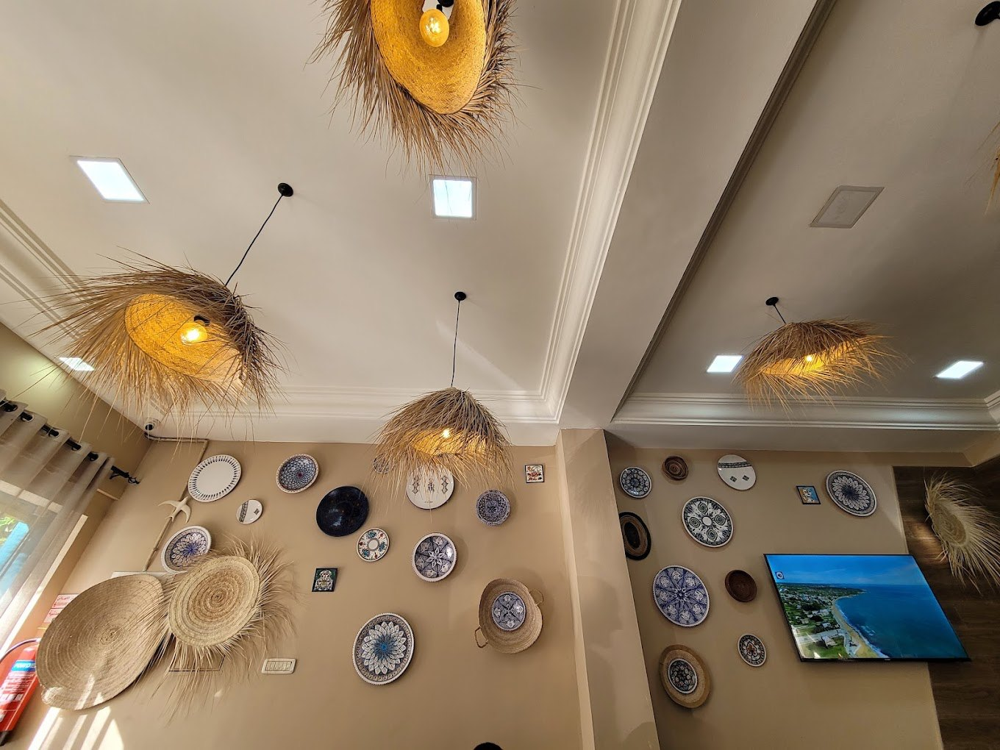

Dar Baya – Restaurant tunisien traditionnel à Sousse
Cuisine tunisienne authentique au cœur de Sousse : généreuse, familiale, préparée chaque jour avec des produits frais.
Notre histoire
La cuisine tunisienne authentique à Sousse
Chez Dar Baya, on cuisine comme à la maison : le couscous roulé le matin, les légumes du marché de Sousse, les épices dosées à la main. Rien de compliqué, tout est fait le jour même.
On vous accueille comme un proche, autour de plats généreux et d'un thé à la menthe brûlant. Tous nos plats sont halal.

125+
clients ravis
Galerie
Quelques images de la maison
Cliquez sur une photo pour l’afficher en plein écran.








Avis clients
Ils ont mangé chez nous
« Un accueil vraiment chaleureux et une cuisine tunisienne copieuse, excellente, à des prix très justes. »
« Cadre soigné et convivial, un couscous et un poisson remarquables, avec un service attentionné. »
« Le personnel prend le temps d'expliquer la carte, les plats sont généreusement épicés et le thé à la menthe est parfait. »
« Un couscous généreux et inoubliable, un service poli avec de petites attentions offertes. »
« L'adresse à retenir à Sousse pour retrouver la vraie cuisine tunisienne, comme à la maison. »
Vous avez aimé votre repas ? Partagez-le
Votre avis sur Google aide les familles de Sousse et les voyageurs à découvrir la vraie cuisine tunisienne. Cela nous prend une minute et nous fait très plaisir.
Infos pratiques
Où trouver le restaurant Dar Baya à Sousse ?
Horaires
Tous les jours, de 12h à 17h
Téléphone
53 664 040
Paiement
Carte bancaire et espèces acceptées
Stationnement
Parking gratuit à proximité